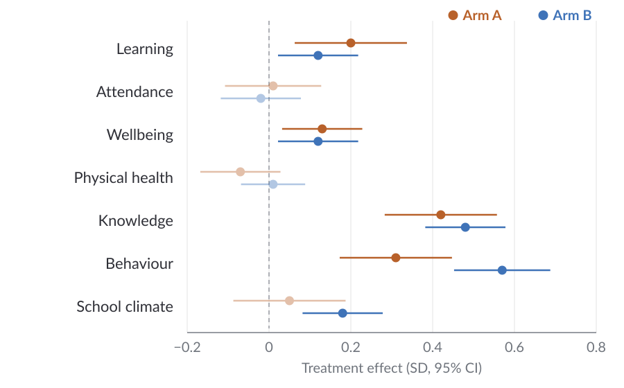

And a footnote can appear last.

| Full Package | Soft Only | Hard Only | |
|---|---|---|---|
| Learning (SD) | 0.15** (0.06) |
0.14** (0.07) |
0.02 (0.06) |
| Attendance (%) | 2.1 (1.8) |
1.8 (1.9) |
0.5 (1.7) |
| Stigma (SD) | -0.23*** (0.05) |
-0.21*** (0.06) |
-0.08 (0.05) |
Illustrative numbers. Standard errors clustered at school level. *** p<0.01, ** p<0.05, * p<0.1
Standard errors clustered at school level ($s$).
Menstrual health education → ??? → Better learning outcomes
+ follow the order of the slidedata-step="="| Variable | Control | Treatment | p-value |
|---|---|---|---|
| Age | 13.2 | 13.4 | 0.42 |
| Baseline test score | 0.01 | -0.02 | 0.78 |
| Attendance rate (%) | 82.1 | 81.8 | 0.91 |
| Household size | 5.8 | 5.9 | 0.65 |
Joint F-test p-value: 0.72
← Back